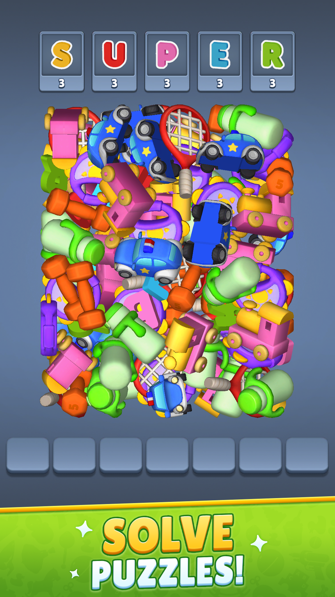
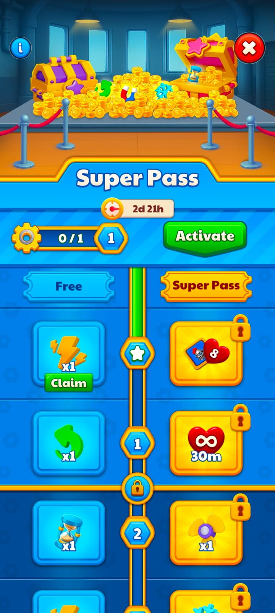
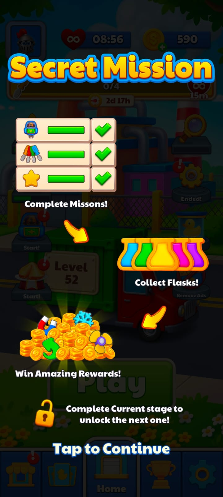
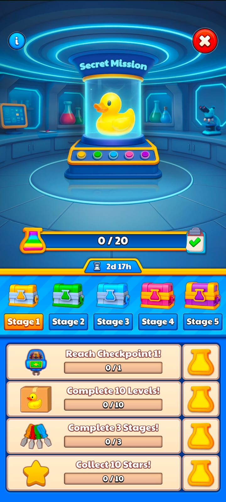
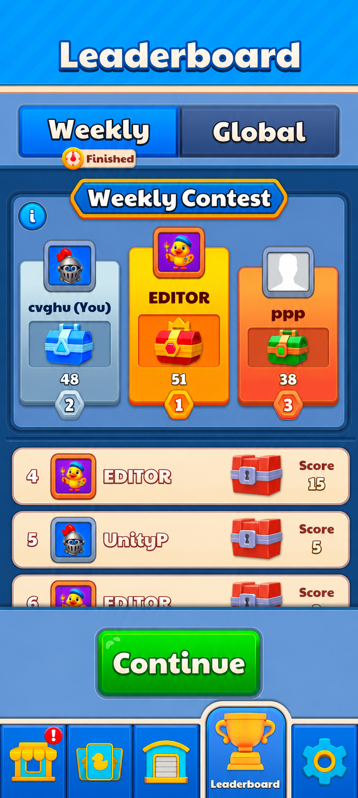
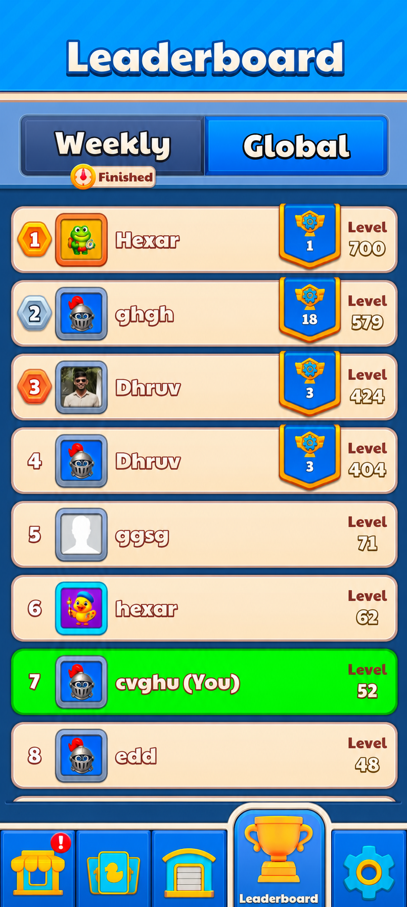

Case Study 02
Super Match Factory
Match-3D Level Design, LiveOps Systems, DDA, and Monetization Design
Super Match Factory is a casual Match-3D mobile game where players collect target objects from a stack of 3D items within a time limit.
Case Study 02
Match-3D Level Design, LiveOps Systems, DDA, and Monetization Design
Super Match Factory is a casual Match-3D mobile game where players collect target objects from a stack of 3D items within a time limit.
My work focused on Match-3D level design, difficulty balancing, DDA logic, LiveOps systems, task-based events, Battle Pass progression, leaderboards, offers, analytics event planning, Firebase Remote Config support, and A/B testing support.
The game needed smoother difficulty pacing, stronger systems for monetization and engagement, easier LiveOps participation, and more reasons for players to return, compete, and continue playing.
The level design process followed the same player-first thinking used in Cubescapes, adapted for Match-3D object collection. I planned levels around object count, stack readability, timer pressure, goal structure, object visibility, difficulty pacing, booster moments, and player flow.
DDA was designed to reduce repeated frustration without removing challenge. If a player failed a level multiple times, later attempts could temporarily reduce object count or stack complexity for a limited number of attempts.
A passive task-based event designed to increase engagement. Players completed multiple tasks across stages and earned rewards without needing a completely separate gameplay mode.
A long-term progression system where players earned tokens through level completion. Harder levels gave stronger progress, while premium rewards added extra value and showcase motivation.
Global and weekly leaderboards were designed to create competition, achievement motivation, and repeat sessions through score-based progression and rank rewards.
Analytics events were planned to track level starts, completions, failures, booster usage, offers, purchases, event progress, Battle Pass progress, and leaderboard activity. These signals helped identify stuck points, resource pressure, engagement patterns, and monetization opportunities.
Approved visuals from Super Match Factory showing gameplay, Battle Pass, Secret Mission, and leaderboard systems.






Exact internal data and performance metrics are omitted for confidentiality. The design work supported smoother difficulty tuning, stronger LiveOps structure, clearer event participation, more long-term progression motivation, and better data-informed iteration.